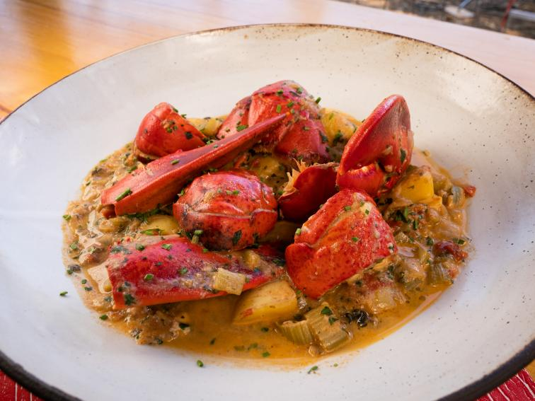

Americaine sauce is a recipe from classic French cookery containing chopped onions, tomatoes, white wine, brandy, salt, cayenne pepper, butter and fish stock. It is sometimes incorrectly referred to as sauce armoricaine (pronounced [sos aʁmɔʁikɛn]), but in fact the sauce was invented by a cook from Sète, Hérault, who had worked in the United States
As with many other classic dishes the original recipe has been adapted over time and almost every chef will prepare the sauce in a slightly different way. Modern recipes usually include tarragon, will use lobster stock rather than pounded lobster, and often replace cayenne pepper with paprika.
Can reuse old lobster sauce. Just reduce some wine/stock until syrupy ⅙ of volume, add cream and reduce by ½ , then instead of adding butter cubes, add day-old sauce. Add more butter as needed. Also keep day old sauce cold when adding and only add small amounts at a time if whisking. All of this can be done with an emulsion blender/blender, but the most simple way is with a whisk and less things to clean although it takes a little longer. Re-season to taste.